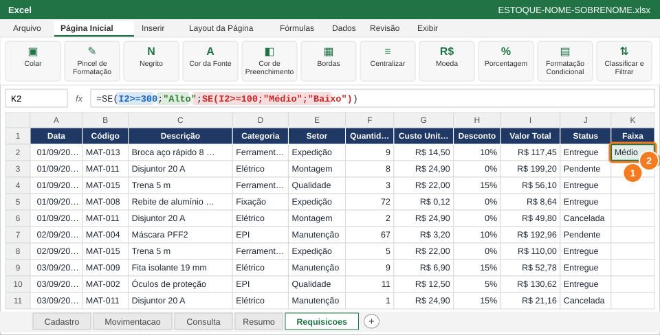
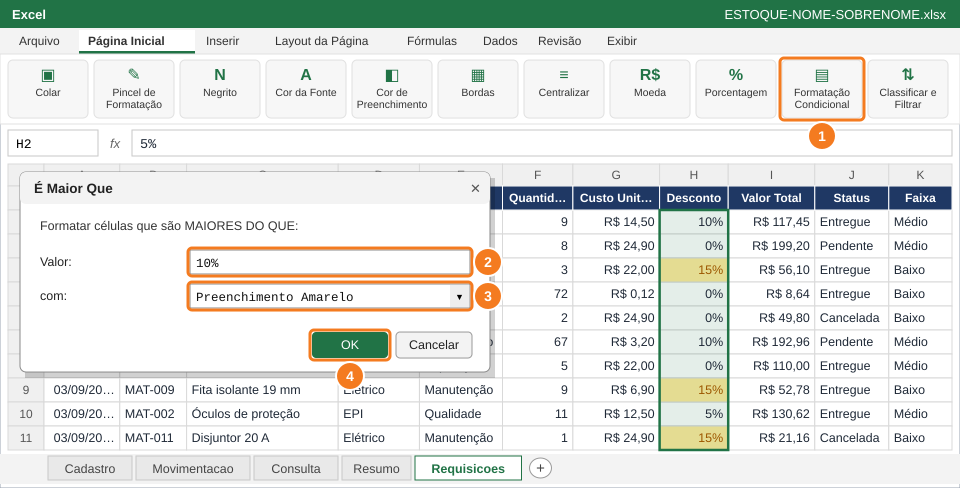
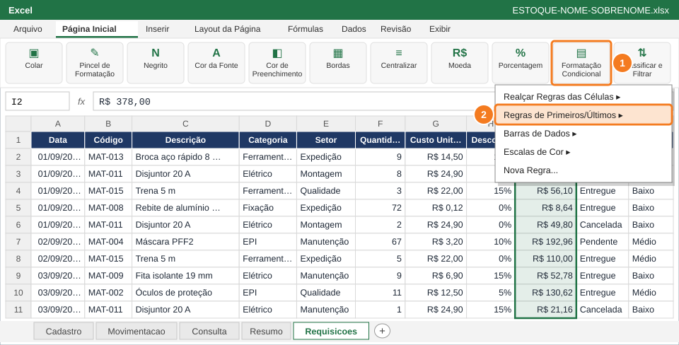

Classificar cada requisição com o SE aninhado e fazer os destaques automáticos aparecerem numa base de 120 linhas: descontos altos, maiores valores, escala de cores e linhas canceladas.
Você vai usar
SE aninhado
Realçar Regras das Células
Regras de Primeiros/Últimos
Escalas de Cor
Nova Regra com fórmula
Gerenciar Regras
Aba de trabalho:Requisicoes · Slides de apoio: Arquivo 3 — slides 23–25; Arquivo 5 — slides 26–27; Arquivo 4 — slides 13–15.1
1
Crie a coluna Faixa com o SE aninhado

Em K1 o título; em K2 (1) o SE aninhado; duplo clique na alça (2) copia até a linha 121.
Em K1 digite Faixa e copie o visual do cabeçalho com o Pincel de Formatação.
Em K2 (1), digite a fórmula abaixo: valores a partir de R$ 300 são Alto, a partir de R$ 100 são Médio e o resto é Baixo.
Dê duplo clique na alça de preenchimento de K2 (2) para copiar até a linha 121.
=SE(I2>=300;"Alto";SE(I2>=100;"Médio";"Baixo"))
💡 DicaSempre teste do maior para o menor: se você começar por I2>=100, o valor de R$ 500 já cai em "Médio" e nunca chega a "Alto".
✅ VerifiqueA coluna Faixa mostra só Alto, Médio ou Baixo nas 120 linhas, sem erros.
2
Destaque os descontos acima de 10%

Selecione H2:H121, Formatação Condicional (1), É Maior Que: valor (2), cor (3), OK (4).
Selecione H2:H121 (Desconto).
Página Inicial → Formatação Condicional (1) → Realçar Regras das Células → É Maior Que…
Digite 10% (2) e escolha Preenchimento Amarelo e Texto Amarelo Escuro (3).
Clique em OK (4).
✅ VerifiqueSó os descontos de 15% ficam amarelos; 0%, 5% e 10% continuam sem cor.
🐧 No LibreOffice CalcFormatar → Formatação Condicional → Condição → Valor da célula émaior que0,1 → estilo amarelo.
3
Marque os 10 maiores valores em verde

Selecione I2:I121, Formatação Condicional (1) → Regras de Primeiros/Últimos (2).
Selecione I2:I121 (Valor Total).
Formatação Condicional (1) → Regras de Primeiros/Últimos (2) → 10 Primeiros Itens…
Confirme 10 e escolha Preenchimento Verde e Texto Verde Escuro → OK.
💡 DicaTroque para 10 Últimos Itens para ver os menores valores e depois volte para 10 Primeiros.
✅ VerifiqueExatamente 10 células de Valor Total ficaram verdes em toda a coluna (role a planilha para conferir).